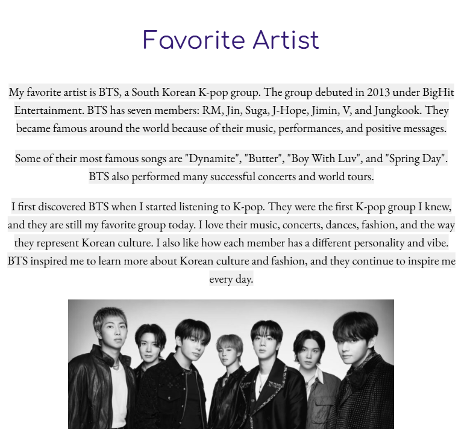
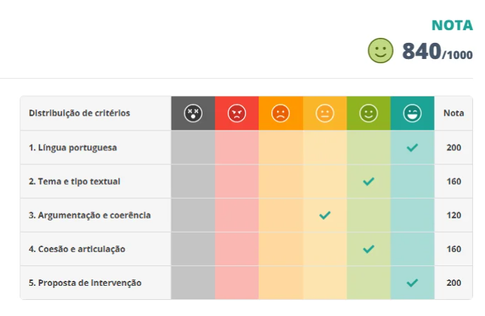

Durante as aulas de inglês foram desenvolvidas habilidades de flexionar verbos no simple past. Esta atividade tem como proposta a aplicação prática dessas formas conjugais ao realizar a descrição de algumas das minhas obras favoritas.
Habilidades e Competências

AnexoEste trabalho teve como objetivo central o desenvolvimento de um manifesto em formato de vídeo sobre determinado tema. Com o processo de escolha do conteúdo, roteirização, gravação e edição, eu e meu grupo realizamos um manifesto sobre a desvalorização da arte, enfatizando seu preconceito esteriotipado e demonstrando sua relevância dentro da sociedade.
Habilidades e Competências
Tema: Os perigos do autodiagnóstico de transtornos mentais nas redes sociais no Brasil.
Gênero : Dissertação ENEM
Habilidades e Competências

Anexo